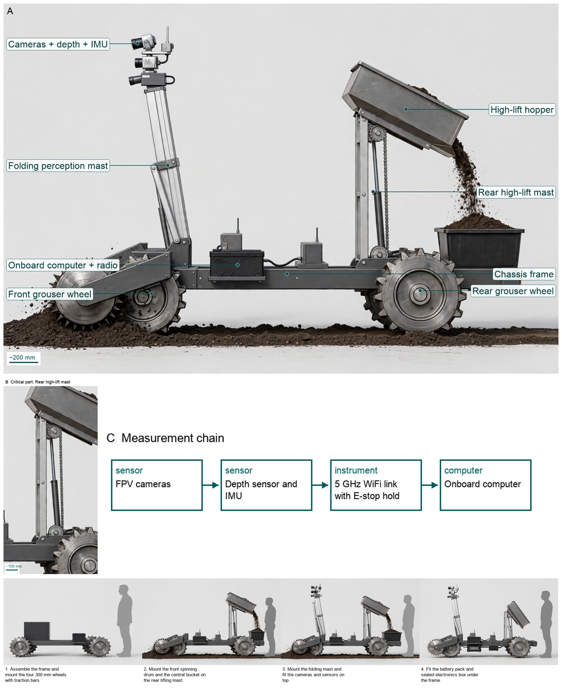
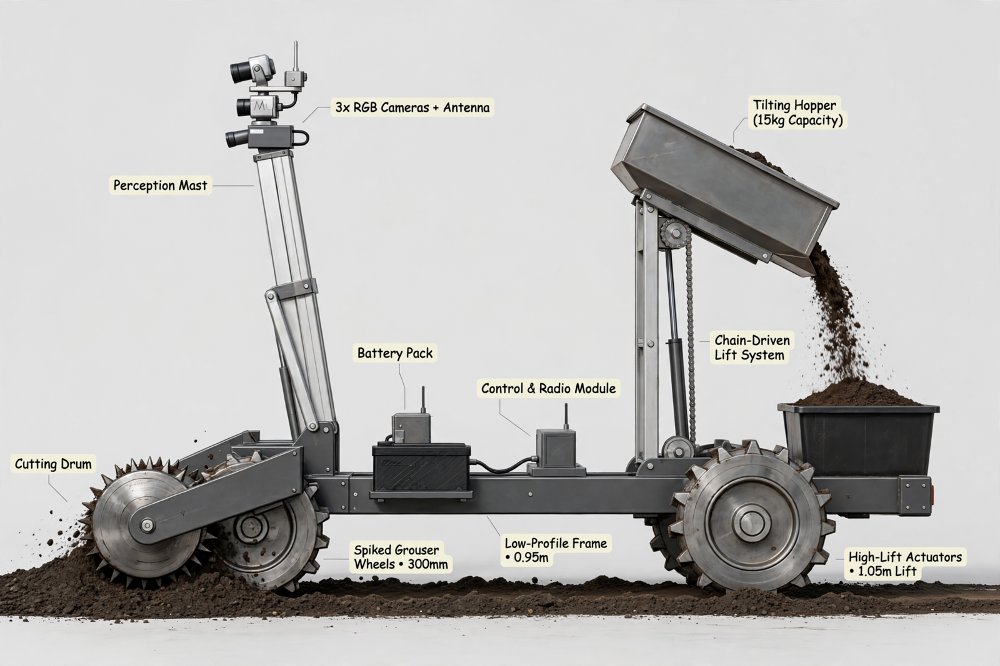
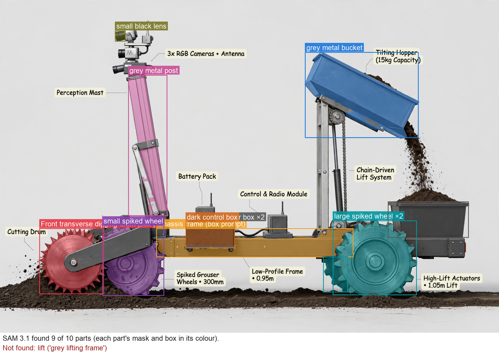

Hardware Scientist — concept report
Lunar regolith excavation robot
Future lunar bases need loose surface soil (regolith) for building and for extracting oxygen. Design a small robot that drives over a bed of lunar soil simulant, digs it up, carries it and dumps it into a collection bin, operated remotely or autonomously by a team that cannot see or hear the robot.
- Robot mass at most 60 kg
- Fits within 1.0 m long, 0.5 m wide and 0.5 m high at the start
- Digs Black Point 1 (BP-1) lunar basalt regolith simulant
- Controlled remotely or autonomously, with the operators out of sight and hearing of the robot
The concept

Big spiky wheels roll over loose soil while a spinning front drum scoops soil into a bucket that is lifted about 1 m to pour into a bin, steered by video from a tall folding mast that stops the machine if the signal is lost.
Load: Hopper -> Rear lift mast -> Wheels | Measured: IMU -> Onboard computer
Three decisive design choices
- Front transverse single drum with 30 mm shallow cut for low 39 N reaction instead of drag blade or deep cut
- Rear high-lift mast with 0.15 m dual actuators through 4-to-1 chain at 0.80 efficiency to reach 1.05 m pour lip with 0.30 m overhang
- Purchasable 24 V 20 Ah LiFePO4 pack for 480 Wh at 90.6 Wh per kg giving 53.0 kg total instead of 1000 Wh in 2.92 kg claim
Does the rear mast lift to the 1.05 m pour lip with 0.30 m overhang stay nose-down and within actuator force once deployed geometry and friction are proven by dimensioned sketch and static calculation?
What happened
How the picture was made


What the critic flagged:
- callout: text '3x RGB Cameras + Antenna' contains numbers '3x'
- callout: text 'Tilting Hopper (15kg Capacity)' contains '15kg'
- callout: text 'Spiked Grouser Wheels • 300mm' contains '300mm'
- callout: text 'Low-Profile Frame • 0.95m' contains '0.95m'
- callout: text 'High-Lift Actuators • 1.05m Lift' contains '1.05m'
What the segmenter saw (SAM 3.1)
Code asked SAM for each part by a plain phrase and measured the boxes against what the design expects; the critic received the differences as evidence.

How the council changed
The council's instructions were not rewritten in this run.
References
0 sources found by the council's searches and the prior-art check (click to open)
Files
- Whiteboard replay
- Reference list (Markdown)
- iter_00 transcript · whiteboard
- iter_01 transcript · whiteboard
Run 20261102-211611_lunar-regolith-excavation-robot · total cost $4.18 · conceptual illustration — physical performance not established.